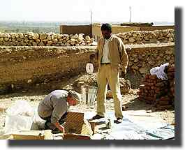
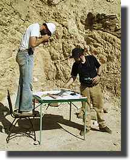
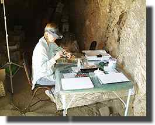
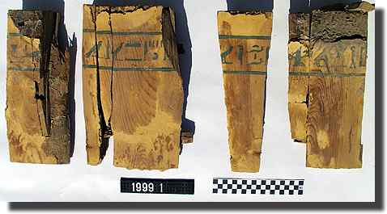
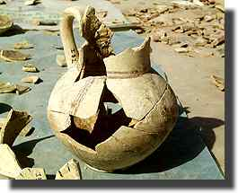
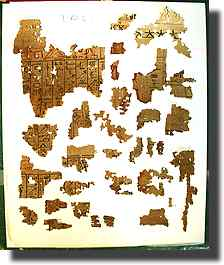

|
|||
Saturday 11 DecemberFollowing Pamela and Alan's departure, the pottery work initially goes back to finishing sorting the remaining material from the shaft of Senneferi. This is tedious but necessary work; each excavated layer is sorted into the different types, and then each is weighed. The layer numbers are written on each sherd so that we do not have to keep separate bags for each layer.
John will be leaving on Monday, so he begins the process of grouping the material for packing. Part of this process is photographing the material. So that we can get prints, slides and digital photos, we both work at it with our cameras. It is slow and hot work.  Bridget has been responsible for conserving the BM's papyri for many years, and so who better to ask to look at the hundreds of fragments of Senneferi's Book of the Dead? The methods she uses are basically to humidify the curled and crumpled fragments, and then lay them on conservation-grade materials weighted down with glass and other objects while they slowly dry. |
|||
Sunday 12 DecemberAt last we finish sorting the pottery from the Senneferi shaft. Working from the burial chamber out, we had decided to stop either when we reached the lowest levels of the shaft, or when the levels of intrusive material became too great. As it was, we began to find the Late Roman pottery typical of the filling of the shaft in quantity only in the last three levels of the corridor or so, which tends to confirm the impression that we have a fairly uncorrupted, if robbed, deposit in the burial chambers. After we finished this, we start to re-examine the earlier groups we had made. Today we chose the so-called 'Oasis' group of amphorae; we make a lot of joins, and can guess that there are perhaps 8/9 of them, but it will take more work to get one complete enough to be able to draw it.

|
|||
Monday 13 DecemberWe say goodbye to John as he heads off in a taxi at 6:05 for the airport. He has done a great job, and even though we hope he'll be able to come back next season, the coffin fragments have already been studied more than in any other such tomb. So it's off to the tomb, where Gillian and I continue with the pots, and Bridget with the papyri. Outside we get out the last remaining group to be studied. These are the fine marl clays, which mostly form small but elegant vessels with simple decoration. We aim to try and collect the sherds from these and put the vessels back together to some extent. The problem with this is that it is not very easy to draw a complete vessel, and so we have reassembled some of the more complete vessels into several parts, so that these parts can be placed together convincingly for a photograph, but are still in a form in which they can be drawn. We are both surprised to find how many sherds are still missing, despite our search. It would seem that some fragments must have been destroyed or somehow removed in previous robberies/investigations of the tomb. Here is a photo of one of the more complete vessels.
Here is a photograph of one of the sheets of storage material covered with fragments of papyrus. Bridget is processing the fragments according to the level in which they were found; it is tempting for Bridget to try and and do some rearrangement, but we all agree that the priority for her time is to conserve and store the material, so that we can photograph it and work on it at home. You can see from this photo that the papyrus is very elegantly written. It does indeed seem typical of examples from the reign of Thutmose III we have in the BM. |
|||
|
All text and images © Nigel Strudwick 1999
|
|||
 The Dig Diary 1999--Part 4
The Dig Diary 1999--Part 4© Nigel Strudwick 1997-2016